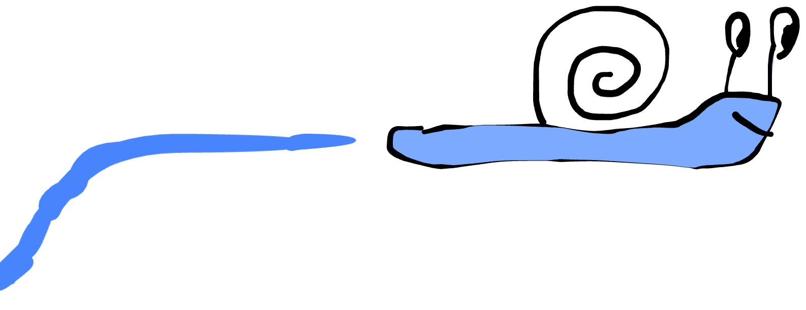
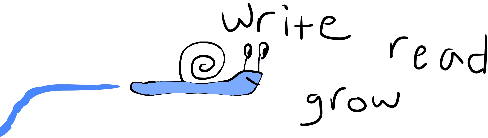

Snailfriends is a snail mail network that provides people opportunities to authentically share with and learn from other people, by way of handwritten anecdotes.

In a digital world, our perception is limited to what we read, or what is curated for us.
Many things shared online are designed to increase screen engagement, not necessarily to enrich readers or broaden their perspectives.
Things posted online are also open to public scrunity, and therefore shaped by that reality... further limiting their authenticity.
For the same reason, many people never use online platforms to share real stories about themselves, their passions, or their thoughts.
As a result, we may feel disconnected from other people, the world, and even ourselves. The internet and the current modes of "connecting" can be isolating.
Few outlets allow us to share our own stories and engage with those from others. We encourage you to do this.
Slow down, reflect on yourself, write to share, and read to learn from other people. Enhance your connections with humans and the world around you.
To join the project, handwrite a story, idea, or reflection and mail to PO Box 16 in Richmond, MA, 01254. Once received, we will open your mail, repackage and readdress it (to keep your identity anonymous), and send to someone else in the network. We will then send you mail from someone else, who will be anonymous to you. Once you receive mail, write and send another letter to the PO Box, and this anonymous mail exchange cycle will continue between you and everyone else in the network.
Join our mission to encourage handwriting, unify real people through unique stories, offer authentic sharing outlets, and deepen our connections with the real world.

Disclaimer: By participating in Snailfriends, you acknowledge that your mail will be opened and read by us and the others in the network. Please exercise discretion when sharing personal stories or sensitive information. Please do not include illegal or confidential content in your mail, such content will be reported to the authorities. Participation is voluntary, and submitting mail constitutes consent to these terms.
© 2026 Snailfriends